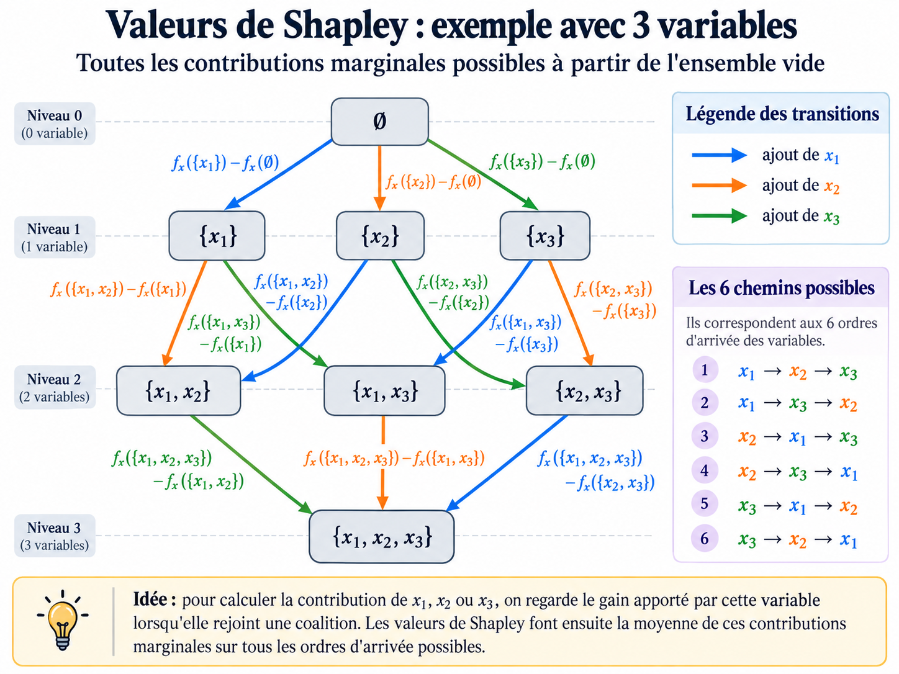
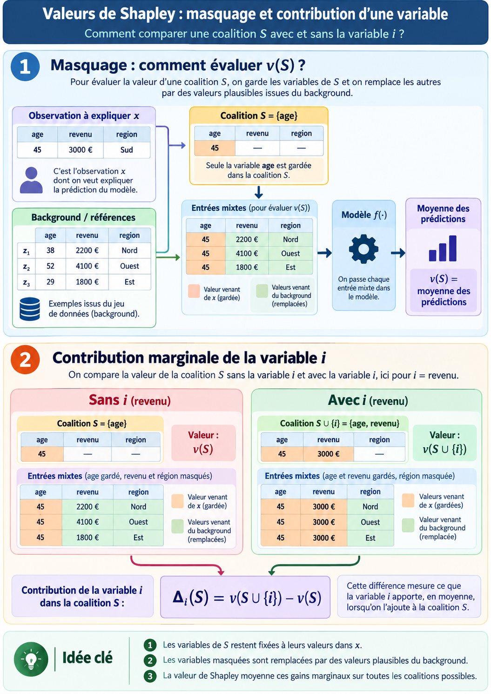

5. Modèles explicables, valeurs de Shapley et LIME#
Avant d’introduire des méthodes d’explicabilité avancées, rappelons qu’il existe des modèles par essence explicables.
5.1. Modèles intrinsèquement explicables#
5.1.1. Régression linéaire#
Dans une régression linéaire, la prédiction est une somme pondérée :
Interprétation :
\(\beta_j\) représente la variation attendue de \(\hat{y}\) quand \(x_j\) augmente d’une unité (à variables égales par ailleurs).
Le signe de \(\beta_j\) indique le sens de l’effet (positif ou négatif).
Avantages ✅ |
Limites / inconvénients ⚠️ |
|---|---|
Lecture directe des coefficients; très pédagogique pour comprendre le sens et l’amplitude des effets. |
Sensible à la colinéarité; effets non linéaires et interactions mal capturés sans transformations. |
5.1.2. Régression logistique#
Pour la classification binaire, la régression logistique modélise la probabilité via la fonction logit :
Interprétation :
Chaque coefficient \(\beta_j\) agit linéairement sur le log-odds.
\(e^{\beta_j}\) s’interprète comme un odds ratio, utile pour quantifier l’effet d’une variable sur la probabilité d’appartenir à la classe positive.
Avantages ✅ |
Limites / inconvénients ⚠️ |
|---|---|
Très utilisé en pratique; coefficients interprétables; bon baseline en classification tabulaire. |
Frontière de décision linéaire dans l’espace des variables transformées; interactions/non-linéarités à ajouter explicitement. |
5.1.3. Arbre de décision#
Un arbre de décision suit des règles du type :
“si température > seuil, alors…”
“sinon, aller à une autre règle”
Pourquoi c’est interprétable :
Chaque prédiction suit un chemin de décisions lisible.
Les seuils sont explicites et justifiables métier.
Avantages ✅ |
Limites / inconvénients ⚠️ |
|---|---|
Règles simples et visuelles; décisions expliquées par des seuils explicites. |
Un arbre profond devient difficile à lire; une forêt (Random Forest) ou du boosting perd cette lisibilité locale directe. |
5.1.4. D’autres modèles interprétables par design#
Au-delà de la régression linéaire et de l’arbre simple, on peut citer plusieurs familles de modèles conçus pour rester interprétables :
GLM et GAM : ils gardent une structure additive, ce qui permet de lire l’effet de chaque variable (linéaire pour GLM, potentiellement non linéaire mais visualisable pour GAM).
EBM (Explainable Boosting Machine) : modèle additif boosté, souvent performant tout en conservant une lecture par effets principaux et interactions contrôlées.
GAMI-Net : réseau additif avec interactions explicites, pensé pour combiner flexibilité et interprétabilité.
FIGS : ensemble parcimonieux de petits arbres, plus lisible qu’un grand ensemble d’arbres classique.
On peut aussi citer, selon les usages, les modèles à règles (listes de décision), les scorecards et certains modèles monotones contraints quand la lisibilité métier est prioritaire.
Source : la documentation PiML recense ces modèles dans sa section “Interpretable Models” : https://selfexplainml.github.io/PiML-Toolbox/_build/html/index.html
5.2. Méthodes agnostiques ou spécifiques#
Explicabilité agnostiques au modèle :
Être applicable aux différents modèles
S’appuie sur les données d’entrées et la prédiction
Permet de comparer les résultats entre modèles et méthodes d’explicabilité
5.3. LIME (Local Interpretable Model-agnostic Explanations)#
Idée principale :
On explique localement une prédiction en remplaçant le modèle complexe par un modèle interprétable simple (souvent linéaire) autour de l’observation étudiée.
Étapes :
Générer des points synthétiques proches de l’observation.
Prédire ces points avec le modèle “boîte noire”.
Donner plus de poids aux points les plus proches.
Ajuster un modèle simple local.
Lire les coefficients du modèle local comme explication.
Avantages ✅ |
Limites / inconvénients ⚠️ |
|---|---|
Très intuitif localement; agnostique au modèle. |
Sensible au voisinage simulé et aux hyperparamètres; stabilité parfois limitée; fidélité locale, pas globale. |
Référence (2016) : Ribeiro, Singh, Guestrin, Why Should I Trust You?: Explaining the Predictions of Any Classifier.
5.4. Idée des valeurs de Shapley#
Petit préambule historique :
Les valeurs de Shapley ne viennent pas du machine learning à l’origine.
Elles ont été proposées en 1953 par Lloyd Shapley, en théorie des jeux coopératifs, pour répartir équitablement un gain entre plusieurs “joueurs”.
Plus tard, cette idée a été adaptée à l’explicabilité : les “joueurs” deviennent les variables du modèle.
Les valeurs de Shapley viennent donc de la théorie des jeux coopératifs.
Analogie :
Chaque variable est un “joueur”.
La prédiction est le “gain” à répartir.
La contribution de chaque variable est sa part moyenne de gain sur toutes les coalitions possibles.
Formellement, pour une variable \(i\):
Où :
\(N\) est l’ensemble des variables,
\(S\) une coalition de variables,
\(f_x(S)\) la prédiction du modèle quand seules les variables de \(S\) sont connues (les autres étant marginalisées).


Fig. 5.1 Illustration du calcul de la valeur de Shapley, Image par l’auteur#
Propriétés (axiomes) des valeurs de Shapley :
Efficacité (ou exactitude locale) : la somme des contributions de toutes les variables reconstitue exactement le gain total à expliquer (prédiction = baseline + somme des contributions).
Symétrie : deux variables qui jouent exactement le même rôle reçoivent la même contribution.
Joueur nul (dummy) : une variable qui n’apporte jamais de gain marginal reçoit une contribution nulle.
Additivité : si l’on additionne deux jeux/fonctions de valeur, les contributions de Shapley s’additionnent de la même manière.
5.5. Du calcul naïf aux méthodes efficaces#
5.5.1. ExactExplainer (référence théorique)#
Idée : calculer (presque) exactement les contributions selon la définition mathématique.
Intérêt : c’est la référence conceptuelle.
Avantages ✅ |
Limites / inconvénients ⚠️ |
|---|---|
Référence théorique claire; interprétation fidèle à la formule. |
Coût combinatoire très élevé; peu scalable quand le nombre de variables augmente. |
Référence : pas de papier canonique dédié dans SHAP; implémentation explicite dans SHAP (documentation dédiée visible dès 2020).
5.5.2. SamplingExplainer et PermutationExplainer méthodes agnostiques (boîte noire) : approcher le calcul exact#
Le calcul exact des valeurs de Shapley devient vite trop coûteux quand le nombre de variables augmente. En pratique, on utilise donc des variantes qui gardent l’esprit Shapley, mais réduisent le temps de calcul.
Idée commune : proposer des méthodes agnostiques (boîte noire) pour obtenir des explications plus rapidement que le calcul exact.
Comment :
SamplingExplainer échantillonne des coalitions/permutations.
PermutationExplainer moyenne les contributions sur plusieurs ordres d’arrivée des variables.
Message clé : ces méthodes sont plus rapides, mais donnent une approximation des valeurs de Shapley (qualité dépendante du nombre d’échantillons/permutations et du background).
Avantages ✅ |
Limites / inconvénients ⚠️ |
|---|---|
Applicables à de nombreux modèles; compromis temps/précision ajustable. |
Résultats approximatifs, parfois bruités; sensibilité au paramétrage et au background. |
Références : méthodes présentes dans SHAP au plus tard en 2019; PermutationExplainer introduit explicitement en release v0.33.0 (A new PermutationExplainer).
5.5.3. Méthodes spécifiques (quand on connaît la structure du modèle)#
5.5.3.1. TreeSHAP (modèles d’arbres)#
Principe :
TreeSHAP est une méthode spécialisée pour les modèles à base d’arbres : Decision Tree, Random Forest, Gradient Boosting, XGBoost, LightGBM, CatBoost, etc.
Comme pour les valeurs de Shapley classiques, l’objectif est de mesurer ce que chaque variable apporte à la prédiction selon les variables déjà connues.
La différence est que TreeSHAP exploite directement la structure de l’arbre pour effectuer ce calcul efficacement.
Que signifie une coalition dans un arbre ?
Une coalition correspond à un ensemble de variables que l’on considère comme connues.
Lorsqu’on parcourt l’arbre :
si la variable utilisée dans un split est connue, on peut suivre directement la branche correspondant à la valeur de l’individu ;
si cette variable est masquée, on ne sait pas quelle branche choisir. On considère alors les différentes branches possibles, en les pondérant selon la proportion d’observations qui les empruntent.
Par exemple :
âge < 50 ?
/ \
70 % 30 %
Si âge est connu, on suit uniquement la branche correspondant à l’âge de l’individu.
Si âge est masqué, TreeSHAP prend en compte les deux branches :
70 % vers la branche gauche
30 % vers la branche droite
Intuition :
On peut voir TreeSHAP comme une manière de regrouper les coalitions qui se comportent de la même manière dans l’arbre et calculer leurs contributions en une seule fois.
Avantages ✅ |
Limites / inconvénients ⚠️ |
|---|---|
Très rapide sur les arbres; stable en pratique sur tabulaire. |
Spécifique aux modèles d’arbres; plus technique à expliquer en détail. |
Référence (2018 prépublication / 2020 publication) : Lundberg et al., Consistent Individualized Feature Attribution for Tree Ensembles.
5.5.3.2. DeepExplainer (réseaux de neurones)#
Principe :
Approxime des valeurs de Shapley pour des modèles profonds.
Avantages ✅ |
Limites / inconvénients ⚠️ |
|---|---|
Adapté au deep learning; utile pour des modèles complexes. |
Dépend fortement du background; plus difficile à diagnostiquer pédagogiquement. |
Référence : pas de papier SHAP canonique dédié; implémentation pleinement fonctionnelle annoncée en 2018 (release v0.19.3). Cadre théorique SHAP : Lundberg & Lee, 2017.
5.6. Wrap-up#
Les modèles intrinsèquement explicables (régression linéaire, arbre simple)
LIME donne une explication locale intuitive et rapide, mais sensible au voisinage simulé.
SHAP apporte un cadre théorique plus robuste, fondé sur les valeurs de Shapley et leurs propriétés mathématiques.
Le choix de l’explainer dépend du modèle et du compromis précision/temps de calcul.
5.4.1. Comment évaluer \(f_x(S)\) en pratique ?#

Fig. 5.2 Illustration du masquage pour estimer \(f_x(S)\), Image par l’auteur#